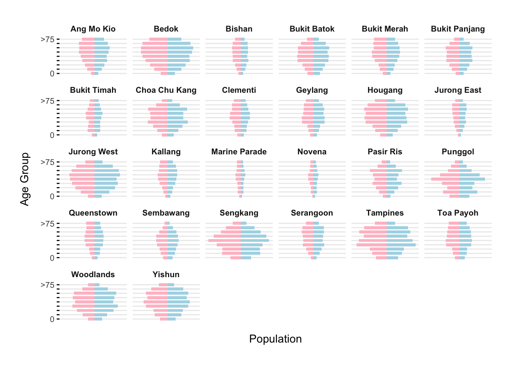
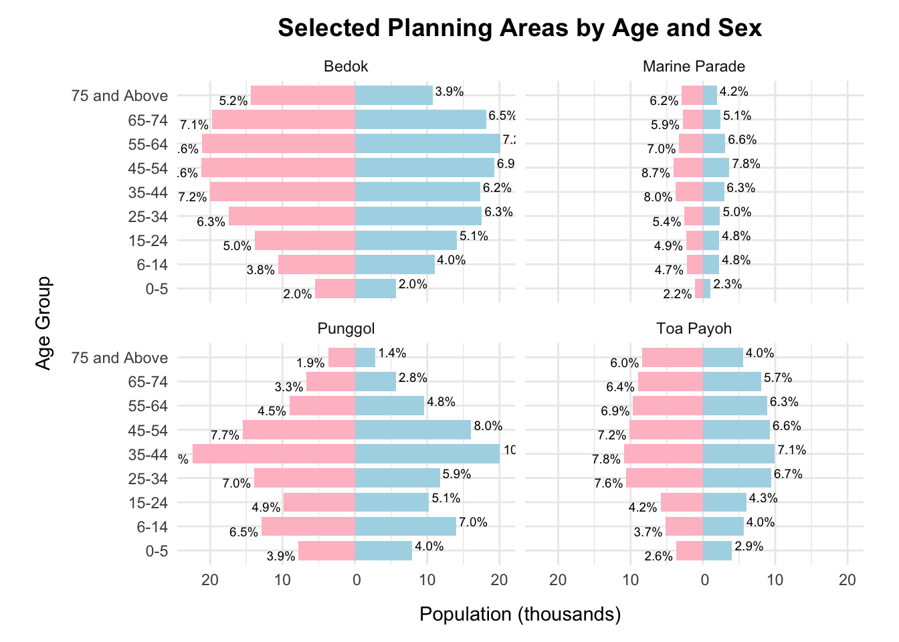

Code
pacman::p_load(tidyverse, patchwork, ggrepel, patchwork,
ggthemes, hrbrthemes, scales)Understanding Demographic Structures and Distribution of Singapore in 2024.
patriciatrisno
May 2, 2025
June 1, 2025
In a rapidly evolving city-state like Singapore, understanding the demographic structure and distribution of the population is essential for effective policy making, informed business decision making or even enhancing personal understanding. Taking the role of a local online media company that provides engaging and accessible information to the public, we aim to present data-driven insights that help inform our readers about the population trends across Singapore.
The dataset “Singapore Residents by Planning Area/Subzone, Single Year of Age and Sex, June 2024” is published by the Singapore Department of Statistics (DOS), the official national authority responsible for collecting, compiling, analyzing, and disseminating statistics in Singapore.
This dataset provides detailed demographic breakdowns based on planning area, subzone, age, sex, and resident count as of June 2024.
Who is Counted?
The dataset includes Singapore residents—defined as citizens and permanent residents (PRs) who live in Singapore and have not been away for a continuous period of 12 months or more.
It excludes non-residents, such as foreigners working, studying, or living in Singapore without permanent residency, except in some other statistics not covered in this dataset.
This dataset contains 60,424 rows and 6 variables, providing a detailed demographic breakdown of Singapore’s resident population as of June 2024. It includes 55 distinct planning areas (cities).
| Variable | Variable extended | Description | Data Type |
|---|---|---|---|
| PA | Planning Area | Geographic area used for urban planning and statistical reporting. | Char |
| SZ | Subzone | Smaller geographic division within a Planning Area. | Char |
| Age | Single Year of Age | Age of a resident, recorded in individual years. | Char (will be converted to integer) |
| Sex | Sex | Gender of a resident (e.g., male, female). | Char |
| Pop | Resident Count | Number of residents in a specific area, age group, and sex. | Double |
| Time | Time / Period | Specific time point or interval to which the data refers. | Double |
Population data (Pop) have been rounded to the nearest 10, meaning that minor discrepancies may occur in aggregated totals. This rounding can reduces exact precision.
The Planning Areas used in this dataset are based on the Urban Redevelopment Authority’s (URA) Master Plan 2019. Although the data represents the year 2024, the spatial boundaries align with URA’s 2019 definitions. For example, areas like Ang Mo Kio are delineated according to this version of the planning map.
Since the current analysis is limited to this specific dataset, using the 2019 planning area definitions does not present an issue.
If future comparisons with past years or other datasets are required, and those datasets use different planning area definitions, further alignment or reconciliation of planning boundaries must be conducted to ensure consistency in the analysis.
We want to develop a data-driven article on the demographic structure and distribution of Singapore’s population in 2024. We aims to present key insights and patterns using visual storytelling.
To achieve this, we will utilize the tidyverse family of R packages for data wrangling and transformation, and the ggplot2 package (along with relevant extensions) for creating impactful and informative visualizations.
A population pyramid was chosen as it effectively shows the age-sex structure of the population, helping to identify trends such as aging, youth dependency, or gender imbalance
Overall Goal:
To uncover meaningful trends in age, gender, and location for public understanding and planning.
Key Focus Areas:
Analyze age and gender distribution across Singapore.
Spot key age peaks (e.g., children, elderly).
See where certain age groups or genders are concentrated.
If the package is already installed, p_load() will load it into your current R session. if it’s not installed, p_load() will automatically download and install it from CRAN (the Comprehensive R Archive Network) before loading it.
| Package | Purpose |
|---|
tidyverse |
A collection of packages for data manipulation, wrangling, and visualization (includes ggplot2, dplyr, tidyr, readr, etc.) |
ggplot2 |
For creating advanced and customizable visualizations |
ggrepel |
To improve the readability of plots by preventing text labels from overlapping |
ggthemes |
Provides a collection of ready-to-use themes for ggplot2 to enhance plot aesthetics |
hrbrthemes |
Provides a set of clean and consistent ggplot2 themes often inspired by typography |
patchwork |
To arrange multiple ggplot2 plots in one layout |
This section focuses on preparing the data for analysis by checking for missing values and applying necessary recoding for readability and consistency.
Briefly, while initial checks suggest no missing values, a manual quick data screening revealed some areas with consistently zero population. These will be processed in a later step.
Since the value of Time is constant at 2024, it offers no meaningful variation for our current analysis. However, we acknowledge its potential utility should we aim to combine this dataset with data from other years in future analyses.
We interpret these findings as indicative of non-residential areas such as industrial zones, commercial districts, natural reserves, or national parks. Consequently, subzones with constant zero population and those with almost entirely zero population are eliminated.
subzones_to_exclude <- c("Liu Fang", "Samulun", "Shipyard", "Tukang", "City terminals", "Singapore General Hospital", "Central Water Catchment", "Changi Airport", "Changi Bay", "Pandan", "Toh Tuck", "Anson", "Bayfront Subzone", "City Hall", "Clifford Pier", "Marina Centre", "Maxwell", "Nicoll", "Phillip", "Raffles Place", "Kallang Way", "Defu Industrial Park", "Lorong Halus", "International Business Park", "Jurong Port", "Jurong River", "lakeside (Business)", "Penjuru Crescent", "Chin Bee", "Kian Teck", "Safti", "Kallang Bahru", "Lim Chu Kang", "Mandai East", "Mandai West", "Bras Basah", "Marina East", "Marina South", "East Coast", "Marina East (Mp)", "Istana Negara", "North-Eastern Islands", "Somerset", "China Square", "People's Park", "Pasir Ris Wafer fab Park", "Airport Road", "Paya Lebar East", "Paya Lebar North", "Paya Lebar West", "Plab", "Benoi Sector", "Gul Basin", "Gul Circle", "Joo Koon", "Pioneer Sector", "Coney Island", "Punggol Canal", "National University Of S'pore", "Port", "Queensway", "Singapore Polytechnic", "Paterson", "Kampong Glam", "Mackenzie", "Rochor Canal", "Selegie", "Pulau Punggol Barat", "Pulau Punggol Timor", "Seletar", "Seletar Aerospace Park", "Lorong Halus North", "Sengkang West", "Senoko North", "The Wharves", "Serangoon North Ind Estate", "Pulau Seletar", "Simpang North", "Simpang South", "Tanjong Irau", "Boat Quay", "Clarke Quay", "Southern Group", "Straits View", "Gali Batu", "Kranji", "Pang Sua", "Reservoir View", "Brickland", "Brickland", "Forest Hill", "Garden", "Park", "Tengah Industrial Estate", "Tengeh", "Tuas Bay", "Tuas North", "Tuas Promenade", "Tuas View", "Tuas View Extension", "Jurong Island And Bukom", "Semakau", "Sudong", "Bahar", "Cleantech", "Greenwood Park", "Midview", "Senoko West", "Woodlands Regional Center", "Nee Soon", "Yio Chu Kang", "Yio Chu Kang North", "City Terminals", "Changi Point", "Bugis", "Tanjong Pagar", "Bukit Merah", "Cecil", "Jurong Gateway", "Lakeside (Leisure)", "Kampong Bugis", "Mandai Estate", "Dhoby Ghaut", "Goodwood Park", "Newton Circus", "Monk's Hill", "Orange Grove", "Malcolm", "Mount Pleasant", "Boulevard", "Tanglin","Loyang East", "Loyang West", "One North", "One Tree Hill", "Oxley", "Bencoolen", "Farrer Park", "Little India", "Mount Emily", "Sungei Road", "Victoria", "Sembawang Straits", "Turf Club", "Xilin", "Ridout", "Murai", "Yishun")
respo_data <- subset(respo_data, !(SZ %in% subzones_to_exclude))
respo_dataHowever, subzones showing a persistently low population (around 0-40 residents) are retained for analysis, acknowledging their potentially unique characteristics.
Notably, subzones like “Dunearn”, “Moulmein”, “Kent Ridge”, “Pasir Panjang 1”, “Pasir Panjang 2”, “Institution Hill”, “Robertson Quay”, “Sentosa”, “Tyresal”, and “Springleaf” are can be considered important variables with low population values that can contribute to potential pockets of unique demographics within Singapore.
To enable mathematical calculations, comparisons, and proper sorting based on age values we will convert the data type of Age from char to numeric.
Analyzing population data by each individual year of age can make the analysis complicated and harder to see overall patterns. To simplify and identify broader demographic trends, we group ages into wider categories.
binrespo <- respo_data %>%
mutate(
age_binned = case_when(
Age >= 0 & Age <= 5 ~ "0-5",
Age >= 6 & Age <= 14 ~ "6-14",
Age >= 15 & Age <= 24 ~ "15-24",
Age >= 25 & Age <= 34 ~ "25-34",
Age >= 35 & Age <= 44 ~ "35-44",
Age >= 45 & Age <= 54 ~ "45-54",
Age >= 55 & Age <= 64 ~ "55-64",
Age >= 65 & Age <= 74 ~ "65-74",
Age >= 75 ~ "75 and Above",
)
)
binrespoexclude_areas <- c("Changi", "Downtown Core", "Museum", "Newton", "Outram",
"River Valley", "Singapore River", "Southern Islands", "Tanglin", "Tengah")
binrespo_filtered <- binrespo %>%
filter(!PA %in% exclude_areas, !is.na(age_binned), !is.na(Pop)) %>%
mutate(
age_binned_labeled = case_when(
age_binned == "0-5" ~ "0",
age_binned == "75 and Above" ~ ">75",
TRUE ~ as.character(age_binned)
),
age_binned = factor(age_binned,
levels = c("0-5", "6-14", "15-24", "25-34",
"35-44", "45-54", "55-64", "65-74", "75 and Above"),
ordered = TRUE),
age_binned_labeled = factor(age_binned_labeled,
levels = c("0", "6-14", "15-24", "25-34",
"35-44", "45-54", "55-64", "65-74", ">75"),
ordered = TRUE)
)
pyramid_data <- binrespo_filtered %>%
group_by(PA, age_binned, age_binned_labeled, Sex) %>%
summarise(TotalPop = sum(Pop), .groups = 'drop') %>%
mutate(AdjustedPop = ifelse(Sex == "Females", -TotalPop, TotalPop))
ggplot(pyramid_data, aes(x = age_binned, y = AdjustedPop, fill = Sex)) +
geom_bar(stat = "identity", width = 0.7) +
coord_flip() +
facet_wrap(~ PA) +
scale_y_continuous(
labels = abs,
name = "Population",
breaks = scales::pretty_breaks(n = 4)
) +
scale_x_discrete(
name = "Age Group",
labels = case_when(
levels(pyramid_data$age_binned) %in% c("0-5", "75 and Above") ~ levels(pyramid_data$age_binned_labeled),
TRUE ~ ""
)
) +
scale_fill_manual(values = c("Females" = "pink", "Males" = "lightblue")) +
labs(
title =
) +
theme_minimal() +
theme(
axis.text.y = element_text(size = 8),
axis.ticks.y = element_line(),
axis.title.y = element_text(margin = margin(r = 10)),
axis.title.x = element_text(margin = margin(t = 10)),
axis.text.x = element_blank(),
axis.ticks.x = element_blank(),
panel.grid.major.x = element_blank(),
panel.grid.minor.x = element_blank(),
strip.text = element_text(size = 8, face = "bold"),
plot.title = element_text(hjust = 0.5, face = "bold", margin = margin(b = 15)),
legend.position = "none",
plot.margin = margin(20, 20, 20, 20)
)
Insights:
This graph shows the population by age group in different towns, from babies (0) to elderly people (> 75).
In many areas, the number of children is low compared to adults and elderly people. This shows signs of an aging population and low birth rate.
People aged 35 to 64 make up the largest part of the population in most towns.
Some places, like Bedok, have more older adults, making the pyramid look top-heavy.
Bukit Timah has a balanced spread across all age groups, except for fewer young children. This shows it has a stable, mature community.
Novena, Bukit Timah, and Marine Parade have smaller overall populations, which may be due to fewer homes or higher living costs.
In almost all towns, the number of males and females is nearly equal, though there are slightly more elderly women, which is common as women live longer.
include_areas <- c("Bedok", "Marine Parade", "Punggol", "Toa Payoh")
age_order <- c("0-5", "6-14", "15-24", "25-34", "35-44", "45-54", "55-64", "65-74", "75 and Above")
binrespo_filtered <- binrespo %>%
filter(PA %in% include_areas, !is.na(age_binned), !is.na(Pop)) %>%
mutate(age_binned = factor(age_binned, levels = age_order, ordered = TRUE))
total_pop_pa <- binrespo_filtered %>%
group_by(PA) %>%
summarise(TotalPopPA = sum(Pop), .groups = 'drop')
pyramid_data <- binrespo_filtered %>%
group_by(PA, age_binned, Sex) %>%
summarise(TotalPop = sum(Pop), .groups = 'drop') %>%
left_join(total_pop_pa, by = "PA") %>%
mutate(
AdjustedPop = ifelse(Sex == "Females", -TotalPop, TotalPop),
Percentage = (TotalPop / TotalPopPA) * 100
)
max_abs_pop <- ceiling(max(abs(pyramid_data$AdjustedPop)) / 10000) * 10000
y_breaks <- seq(-max_abs_pop, max_abs_pop, by = 10000)
num_pas <- length(unique(pyramid_data$PA))
num_rows <- ceiling(num_pas / 2)
ggplot(pyramid_data, aes(x = age_binned, y = AdjustedPop, fill = Sex)) +
geom_bar(stat = "identity", width = 0.8) +
coord_flip() +
facet_wrap(~ PA, nrow = num_rows) +
scale_y_continuous(
labels = function(x) format(abs(x) / 1000, scientific = FALSE, suffix = "k"),
name = "Population (thousands)",
breaks = y_breaks
) +
scale_fill_manual(values = c("Females" = "pink", "Males" = "lightblue")) +
geom_text(
aes(label = sprintf("%.1f%%", Percentage),
hjust = ifelse(AdjustedPop > 0, -0.1, 1.1)),
size = 2.5,
position = position_dodge(width = 0.8)
) +
labs(
title = "Selected Planning Areas by Age and Sex",
x = "Age Group",
y = "Population"
) +
theme_minimal() +
theme(
legend.position = "none",
plot.title = element_text(face = "bold", size = 14, hjust = 0.5),
plot.margin = margin(t = 10, r = 20, b = 10, l = 20),
axis.title.y = element_text(margin = margin(r = 10)),
axis.title.x = element_text(margin = margin(t = 10))
)
Insights:
Bedok beside having the highest number of elderly people, here it also shows a large number of people aged 45 and above, which means it is an older and more mature area. It could also mean that many families have lived there for a long time.
Marine Parade has the smallest population among the four areas. This trend is seen across all age groups.
Toa Payoh has a more even spread of people in all age groups. Still, there is a clear number of older adults (55 and above), which makes up more than 22% of the population.
Punggol has the youngest group of people. Many are aged between 25–44 and 0–14, which shows it is a newer area where many young families live.
Across all areas, the number of males and females is quite balanced. However, there are more older women, especially in Marine Parade and Bedok.
The population distribution across various towns in Singapore highlights the noticeable trend of an aging society. In many areas, the number of elderly individuals outweighs that of children, reflecting the broader demographic shift. Bedok is particularly notable for its large elderly population, which stands out in comparison to other regions. While worth noting that some towns have relatively small populations, others exhibit a more balanced distribution, with an almost equal number of children and older adults. This pattern undersline the varying demographic profiles across different parts of the country.
The analysis is based solely on data from 2024, with the dataset covering information only up until September 24, 2024. As a result, this dataset does not fully represent the broader trends or fluctuations that may have occurred beyond this period.
Additionally, the data excludes residents who have been absent from Singapore for a continuous period of 12 months or longer as of the reference period. This exclusion limits the scope of the population being analyzed.
Another limitation is that the population figures have been rounded to the nearest ten, which may impact the precision of certain statistics and interpretations.
Future studies could aim to incorporate more comprehensive datasets covering longer time frames, including those that account for residents who are temporarily absent. Additionally, more granular population data with less rounding could help provide a clearer picture of demographic trends.
Lumley, T. (2010). Complex Surveys: A Guide to Analysis Using R. Wiley.
Rowland, D. T. (2003). Demographic methods and concepts. Oxford University Press.
Singapore Department of Statistics (DOS). (2024, June). Singapore Residents by Planning Area/Subzone, Single Year of Age and Sex.